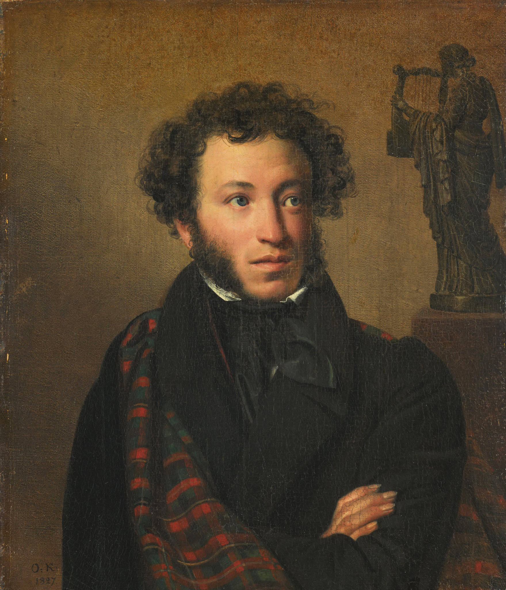
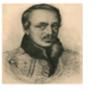

Сергей Есенин
Заметался пожар голубой...
Заметался пожар голубой,
Позабылись родимые дали.
В первый раз я запел про любовь,
В первый раз отрекаюсь скандалить.
Александр Пушкин
У Лукоморья

У лукоморья дуб зелёный
Златая цепь на дубе том:
И днём и ночью кот учёный
Всё ходит по цепи кругом;
Владимир Маяковский
Стихи о советском паспорте
Я волком бы выгрыз бюрократизм.
К мандатам почтения нету.
Михаил Лермонтов
Тучки

Тучки небесные, вечные странники!
Степью лазурною, цепью жемчужною
Мчитесь вы, будто как я же, изгнанники
С милого севера в сторону южную.